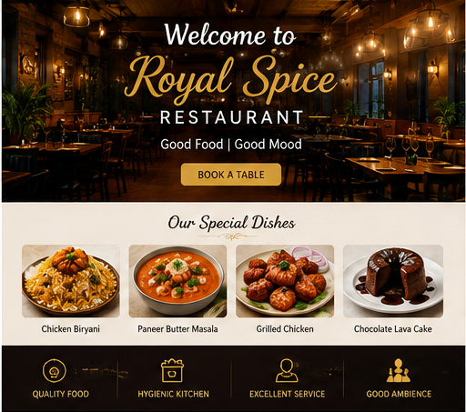

Royal Spice Restaurant
Welcome to Royal Spice Restaurant, where delicious food meets a warm and elegant dining experience. We serve a wide variety of authentic dishes prepared with fresh ingredients and traditional recipes. From spicy biryanis to mouth-watering desserts, every meal is crafted with love and quality. Our restaurant provides a comfortable atmosphere for families, friends, and food lovers. Whether you are visiting for lunch, dinner, or a special celebration, we promise excellent taste and service. Enjoy our chef’s special dishes, exciting offers, and unforgettable hospitality. Come and experience the true flavor of happiness at Royal Spice Restaurant.